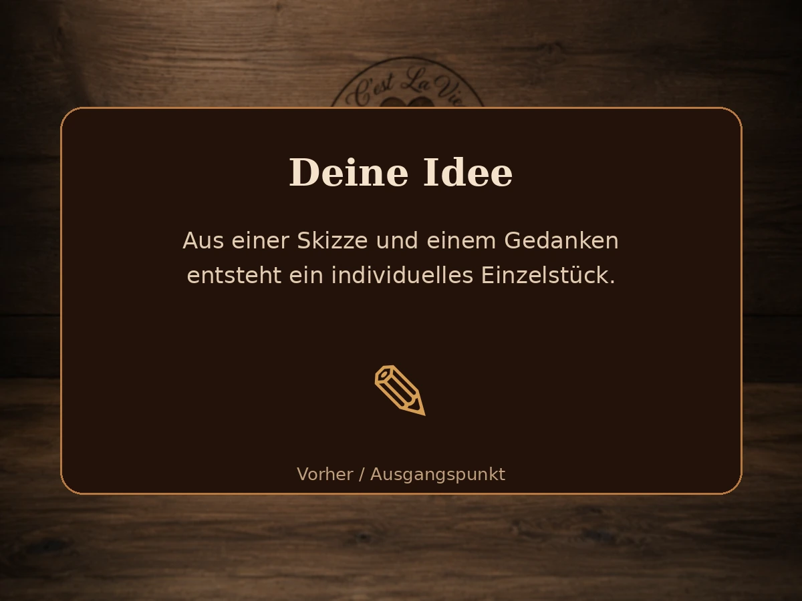
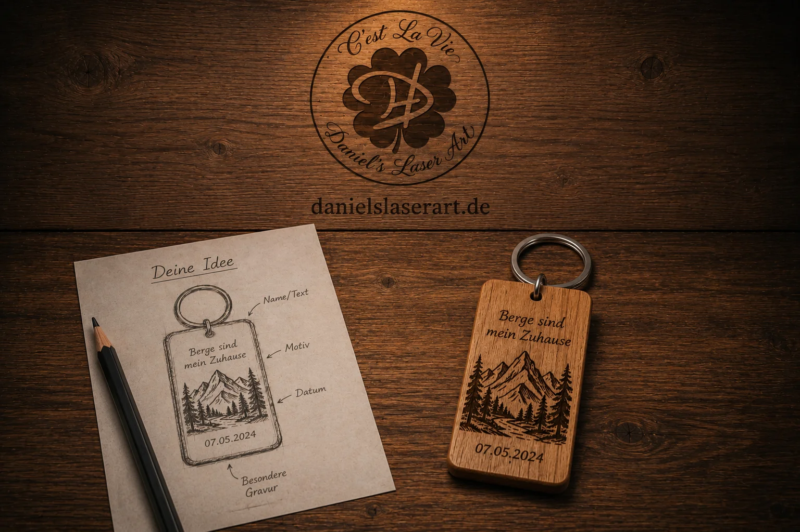
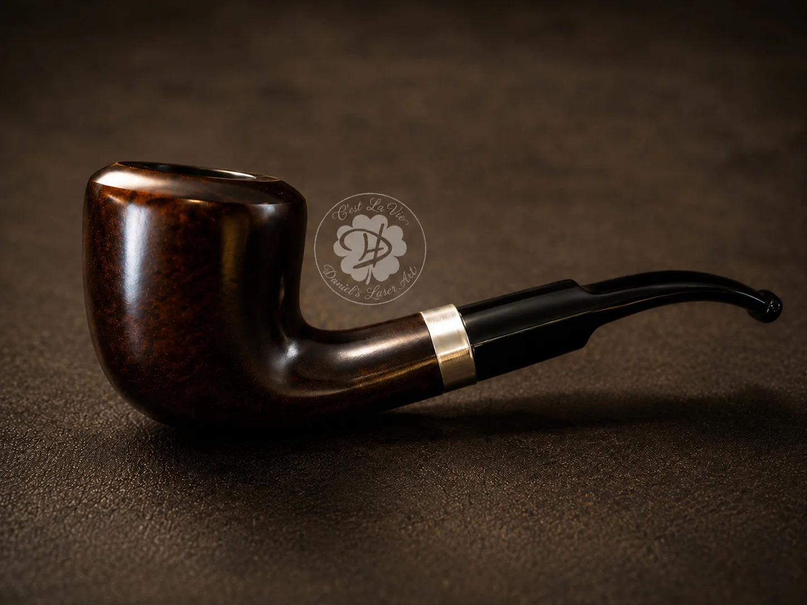
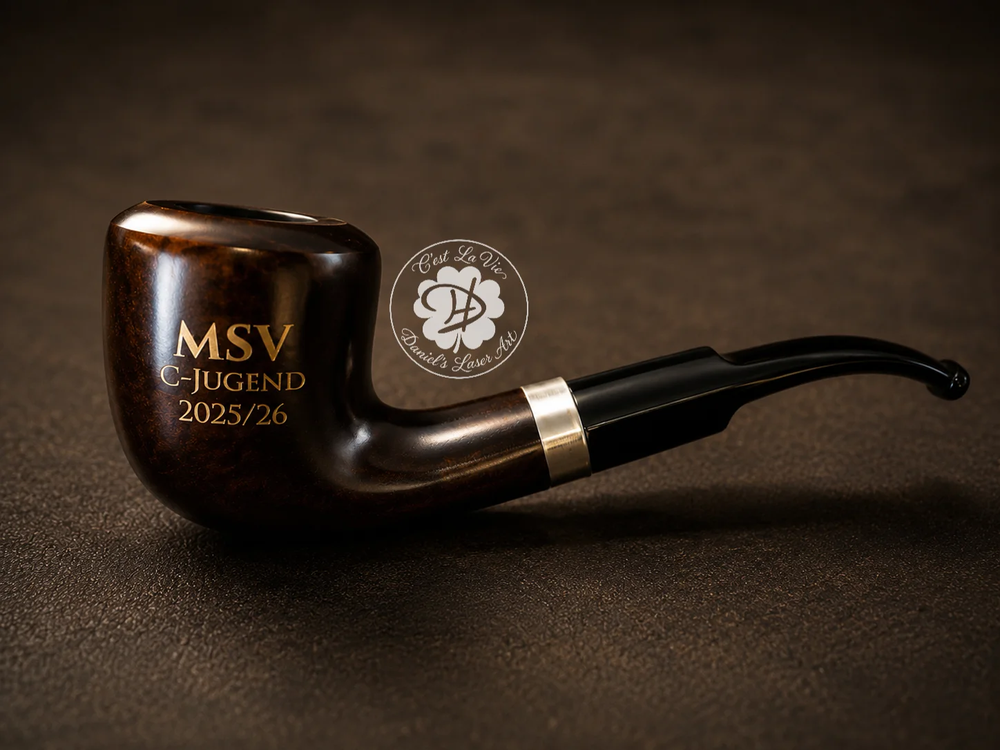
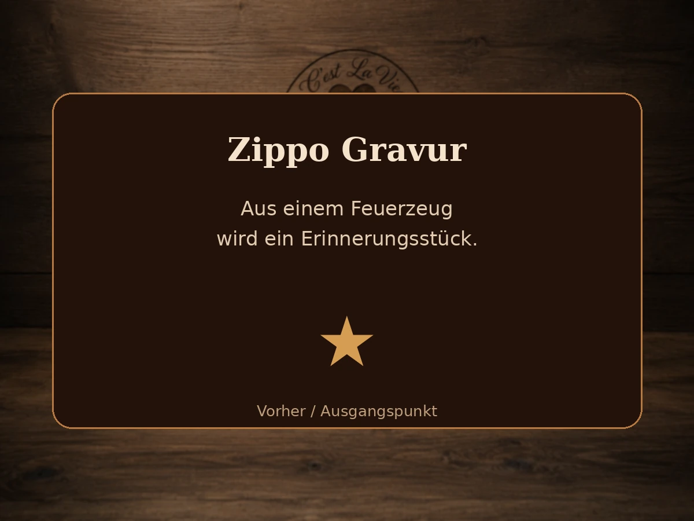
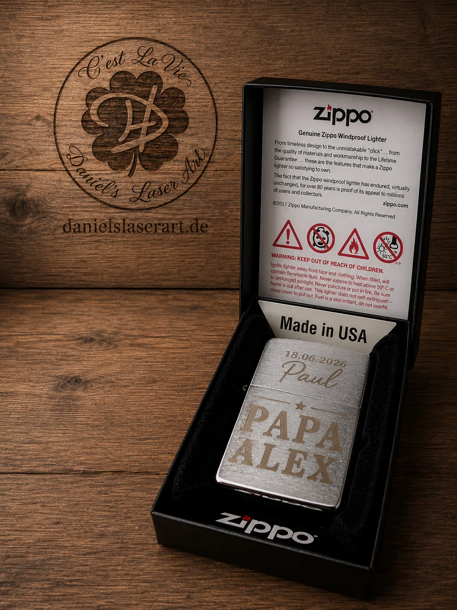
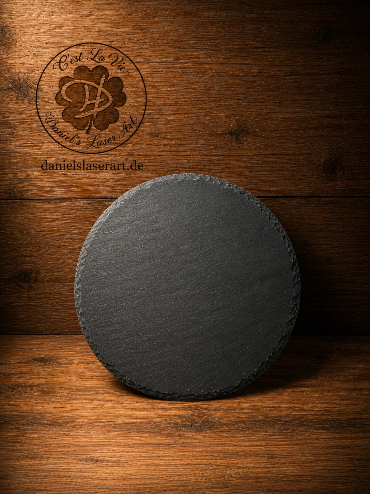
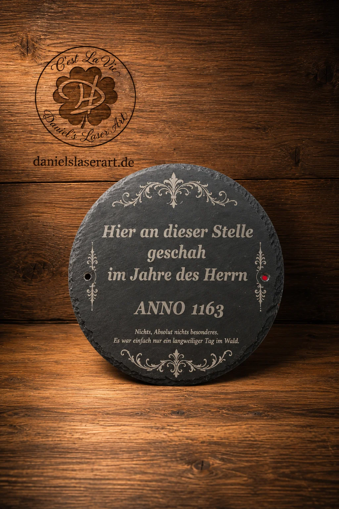

Vorher
Der Anfang: eine Idee, eine Skizze oder ein Wunsch.
⭐ Besondere Projekte
Hier zeige ich besondere Projekte mit Vorher-Nachher-Ansicht: von der ersten Idee bis zum fertigen Einzelstück.
Jedes Projekt beginnt anders – manchmal mit einem einfachen Gegenstand, manchmal mit einer Skizze oder nur mit einer groben Vorstellung. Genau daraus entsteht etwas Persönliches.
Du hast nur eine Skizze, ein Foto oder eine grobe Vorstellung? Daraus entwickle ich gemeinsam mit dir ein persönliches Einzelstück.

Der Anfang: eine Idee, eine Skizze oder ein Wunsch.

Aus deiner Idee entsteht ein persönliches Einzelstück.
Aus einer einfachen Pfeife wurde ein persönliches Dankeschön für den Trainer – mit individueller Gravur und Vereinsbezug.

Ausgangsidee: ein persönliches Trainer-Geschenk.

Gravierte Pfeife als Erinnerung an die Saison.
Ein besonderes Erinnerungsstück mit Namen, Datum und persönlicher Gestaltung – dauerhaft graviert und individuell abgestimmt.

Ausgangsidee: ein persönliches Feuerzeug mit Bedeutung.

Personalisiertes Zippo als Erinnerungsstück.
Von der schlichten Schieferplatte zum besonderen Einzelstück – mit dekorativer Gestaltung, feiner Gravur und rustikalem Charakter.

Ausgangsbasis: eine schlichte runde Schieferplatte.

Individuell gravierte Schieferplatte mit dekorativem Spruchmotiv.